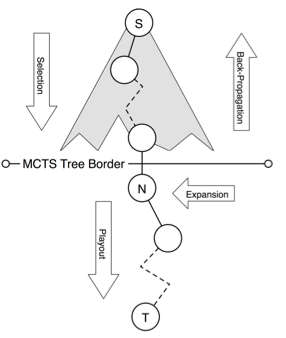

class: center, middle # General Game Playing and Monte Carlo Tree Search ### Armando Ramirez --- # Agenda 1. Introduction 2. Deep-dive 3. ... --- # Game Description Language * *role(a)* means that a is a role in the game. * *base(p)* means that p is a base proposition in the game. * *input(r,a)* means that a is an action for role r. * *init(p)* means that the proposition p is true in the initial state. * *true(p)* means that the proposition p is true in the current state. * *does(r,a)* means that player r performs action a in the current state. * *next(p)* means that the proposition p is true in the next state. * *legal(r,a)* means it is legal for role r to play action a in the current state. * *goal(r,n)* means that player the current state has utility n for player r. * *terminal* means that the current state is a terminal state. --- # Monte-Carlo Tree Search  * *Selection* * *Playout* * *Expansion* * *Back-Propogation* --- # Papers ## --- # core.logic: Functions vs Relations ## The plus function ``` REPL:> (+ 2 3) ``` ## The plus relation ``` REPL:> (run* [q] (+ 2 3 q)) (5) REPL:> (run* [q] (+ 2 q 5)) (3) REPL:> (run* [q] (+ q 3 5)) (2) REPL:> (run* [q] (+ 2 3 5)) (._0) ;; SUCCESS REPL:> (run* [q] (+ 2 3 7)) () ;; FAILURE ``` * The (run* [q] RELATION) macro means “give me all the values of q such that the relation (with q substituted in accordingly) succeeds” --- # core.logic: More complex example ## English p is a pair of whole numbers (x,y) such that x + y = 3 or x+y = 4 --- # core.logic: More complex example ## English p is a pair of whole numbers (x,y) such that x + y = 3 or x+y = 4 ## core.logic ```Clojure (defn pair-example [p] ``` --- # core.logic: More complex example ## English p is a pair of whole numbers (x,y) such that x + y = 3 or x+y = 4 ## core.logic ```Clojure (defn pair-example [p] (fresh [x y] (== [x y] p) ``` --- # core.logic: More complex example ## English p is a pair of whole numbers (x,y) such that x + y = 3 or x+y = 4 ## core.logic ```Clojure (defn pair-example [p] (fresh [x y] (== [x y] p) (in x y (interval 0 Infinity)) ``` --- # core.logic: More complex example ## English p is a pair of whole numbers (x,y) such that x + y = 3 or x+y = 4 ## core.logic ```Clojure (defn pair-example [p] (fresh [x y] (== [x y] p) (in x y (interval 0 Infinity)) (conde [(+ x y 3)] [(+ x y 4)]))) ``` --- # core.logic: More complex example ## English p is a pair of whole numbers (x,y) such that x + y = 3 or x+y = 4 ## core.logic ```Clojure (defn pair-example [p] (fresh [x y] (== [x y] p) (in x y (interval 0 Infinity)) (conde [(+ x y 3)] [(+ x y 4)]))) ``` ## It works! ``` REPL:> (run* [q] (pair-example [0 3])) (._0) ;; SUCCESS REPL:> (run* [q] (pair-example [10 10])) () ;; FAILURE REPL:> (run* [q] (pair-example q)) ([0 3] [0 4] [1 2] [1 3] [2 1] [2 2] [3 0] [3 1] [4 0]) ``` --- # Motivation: English->GDL->core.logic ### English It is Legal for player **w** to mark cell (**m**,**n**) if it is true that cell (**m**,**n**) is blank and it is true that it is player **w**'s turn to move. If it is X's turn to move, O can only noop. If it is O's turn to move, X can only noop. That is, they take turns. --- # Motivation: English->GDL->core.logic ### English It is Legal for player **w** to mark cell (**m**,**n**) if it is true that cell (**m**,**n**) is blank and it is true that it is player **w**'s turn to move. If it is X's turn to move, O can only noop. If it is O's turn to move, X can only noop. That is, they take turns. ### GDL ```Clojure (<= (legal ?w (mark ?m ?n)) (true (cell ?m ?n b)) (true (control ?w))) (<= (legal X noop) (true (control O))) (<= (legal O noop) (true (control X))) ``` --- # Motivation: English->GDL->core.logic ### English It is Legal for player **w** to mark cell (**m**,**n**) if it is true that cell (**m**,**n**) is blank and it is true that it is player **w**'s turn to move. If it is X's turn to move, O can only noop. If it is O's turn to move, X can only noop. That is, they take turns. ### GDL ```Clojure (<= (legal ?w (mark ?m ?n)) (true (cell ?m ?n b)) (true (control ?w))) (<= (legal X noop) (true (control O))) (<= (legal O noop) (true (control X))) ``` ### core.logic ```Clojure (defn legal [role action] (conde [(fresh [?w ?m ?n] (== role ?w) (== action [:mark ?m ?n]) (true [:cell ?m ?n :b]) (true [:control ?w]))] [(== role :X) (== action :noop) (true [:control :O])] [(== role :O) (== action :noop) (true [:control :X])])) ``` --- # Motivation: Use of core.logic legal relation ### Legality checking ``` REPL:> (run* [q] (legal :X [:mark 1 1])) (._0) ;; SUCCESS REPL:> (run* [q] (legal :O [:mark 1 1])) () ;; FAILURE. O cannot mark any square ``` ### Legal move generation ``` REPL:> (run* [q] (legal :X q)) ([:mark 3 3] [:mark 3 2] [:mark 3 1] [:mark 2 3] [:mark 2 2] [:mark 2 1] [:mark 1 3] [:mark 1 2] [:mark 1 1]) REPL:> (run* [q] (legal :O q)) (:noop) ``` --- # Implementation: GDL->core.logic ## The Environment * Runs through arbitrary GDL description and generates an *environment* that represents game rules and state * Each relation now takes an extra argument of the environment so that it can call other relations in the GDL translation: ```Clojure ;; :legal (fn [env role action] (conde [(fresh [?w ?m ?n] (== role ?w) (== action [:mark ?m ?n]) ((get-relation env :true) [:cell ?m ?n :b]) ((get-relation env :true) [:control ?w]))] [(== role :X) (== action :noop) ((get-relation env :true) [:control :O])] [(== role :O) (== action :noop) ((get-relation env :true) [:control :X])])) (defn get-relation [env r] (partial (env r) env)) ``` --- # Implementation: GDL->core.logic ## Pre-processing ```Clojure (collect-relations gdl ;;--> {:legal {:args [env G__6139 G__6140] :body (quote ((<= (legal ?w (mark ?m ?n)) (true (cell ?m ?n b)) (true (control ?w))) (<= (legal X noop) (true (control O))) (<= (legal O noop) (true (control X)))))} ;; etc } ``` --- # Implementation: GDL->core.logic ## Translation rules ### Reflexive head calls turn into unifications of args ```Clojure ;; Transforming Legal (legal ?w (mark ?x ?y)) ;; -~-> (== role ?w) (== move [:mark ?x ?y]) ``` ### All other relations reference the environment ```Clojure (true (cell 1 1 b)) ;; -~-> ((get-relation env :true) [:cell 1 1 :b]) ``` ### not turns into negation as failure constraint (nafc) ```Clojure (not (line X)) ;; -~-> (nafc (env :line) env :X) ``` --- # Implementation: GDL->core.logic ## Translation rules ### Relation are joined in a fresh block ```Clojure (<= (head & args) & tail) ;; -~-> (fresh [fresh-vars] (transformed head) (transformed tail)) ``` ### Multiple related relations are joined by a disjunction (conde) ```Clojure (relation1) (relation2) ;; ... (relationN) ;; -~-> (conde [(transformed relation1)] [(transformed relation2)] ;; ... [(transformed relationN)]) ``` --- # Implementation: MCTS ## Algorithm skeleton ```Clojure (defn mcts-iteration "Performs one iteration of MCTS on state env, using initial statistics stats, playing as player" [env stats player] (loop [env env, stats stats, path (list env)] (if (terminal? env) (mcts-backprop path (get-scores env) stats) (if (not-empty (mcts-unexplored env stats)) (mcts-grow stats path) (let [ch (mcts-select env stats player)] (recur ch stats (cons ch path))))))) ``` --- # Implementation: Goal-Stability Early Cutoff ## Pseudo-code from the article ## Snippet of Clojure code ```Clojure (if (or (terminal? env) (and use-early-cutoff? (is-goal-stable? goals threshold) (>= steps cut))) scores (recur (rand-nth (gen-children env)) next-goals (inc steps))) ``` --- # Future Work * ###Thoroughly test and refactor some of the design in order to publish code * ###core.typed could be a helpful option to more rigorously define things * ###Support GDL-II * ###Implement interactive game engines backed by GDL->core.logic * ###Implement a variety of other extensions to GGP MCTS --- # Conclusion ## Today I have presented * ### Critiques of three recent papers on Monte-Carlo Tree Search * ### A simple introduction to logic programming with core.logic * ### A functional Game Description Language to Clojure core.logic translator * ### A functional Monte-Carlo Tree Search implementation in Clojure using the output of my GDL->core.logic translator * ### An implemented extension to MCTS from a critiqued paper <!--http://gnab.github.io/remark/downloads/remark-0.5.9.min.j-->